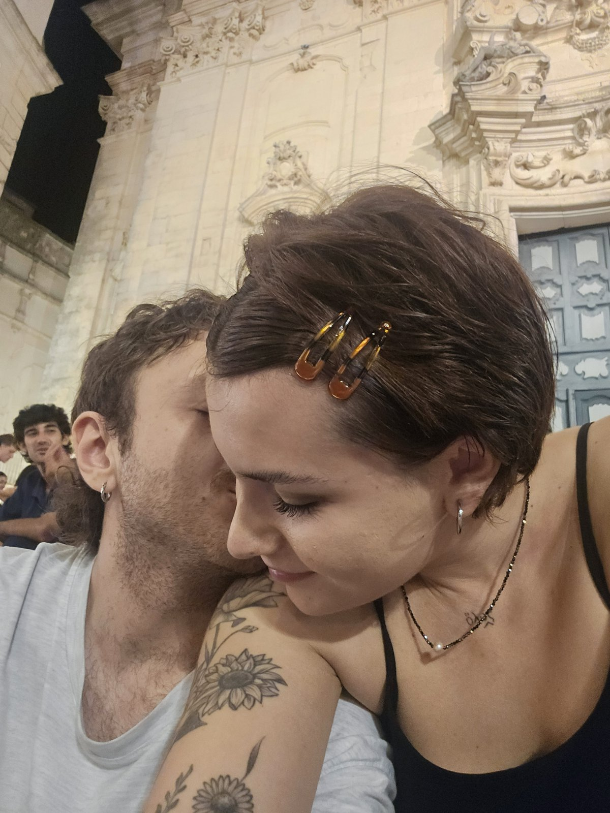

Cara Ninna,
o già cosa stai pensando: "una lettera? e da quando Gibbo scrive lettere?". Da oggi. E siccome tu mi hai insegnato che le cose importanti vanno messe per iscritto, possibilmente con una bella grafia e senza troppe abbreviazioni, eccomi qua. Prometto di non costringerti a datare questo documento: te lo dico io, è autentico.
Tu dici sempre di essere logorroica. Io ti rispondo per iscritto, così resta agli atti: non è vero. O meglio, forse sì, ma io quella voce l'avrei ascoltata per ore (e infatti l'ho fatto). Quando mi parli della tua passione, del tuo lavoro e della tua vita ti si accendono gli occhi, e io di paleografia magari non ci capisco niente, ma di te sì. E tutto quello che ti ho sentito dire, tutto, era esattamente il pezzo che mi mancava.
Cose che so di te (e che non mi sono mai dimenticato)
- Il tuo colore preferito è il viola. Non c'è un motivo preciso, è viola e basta, e a me va benissimo così.
- Il tuo tabacco è il Lucky Strike Blue, senza additivi, con i filtri larghi e lunghi e le cartine Smoking Brown. Anche se io non sono d'accordo con te quando dici che sono le migliori.
- In cucina sei l'unica persona che sia mai riuscita a farmi apprezzare il pollo. L'unica. Tutti i tuoi piatti meriterebbero una recensione da critica culinaria: la tua assassina, la tua carbonara, tutti i tuoi piatti speziati e perfettamente bilanciati, anche quando dici che forse c'è troppo sale. A me sono sempre piaciuti tutti, mi hanno sempre fatto impazzire.
- Il tuo poeta preferito è Montale. E nessuno mi ha mai fatto appassionare alla lettura come hai fatto tu: erano anni che non compravo un libro per me stesso, soltanto per il piacere di leggere, finché non ho conosciuto te.
- Quando sei stanca leggi seguendo il testo col dito, sui libri e pure sugli schermi. E metti le mani in tasca con quella posa da anni '70 che è comicissima, ma che a modo tuo ti rende stilosissima.
- Il tuo dialetto e il tuo accento mi fanno impazzire. Anche se ci vorrà ancora tanto tempo, ammesso che io ci riesca mai, per decodificare tutto quello che dici: il martinese non è roba alla portata di tutti.
- La cosa che forse mi hai ripetuto di più è "me sciaaa", oppure "va cuct". E me lo meritavo.
Il 21 giugno, alle 21:51 (o 21:54, va bene, hai vinto tu)
Ci siamo messi insieme il 21 giugno, il giorno più lungo dell'anno. Io dico alle 21:51, tu dici alle 21:54. Tre minuti di discrepanza tra due testimoni: tu, da paleografa, sai meglio di me che queste cose capitano anche nelle fonti più autorevoli. Facciamo che la data è certa e l'ora è dubbia, come si scrive tra parentesi quadre.
Da quel momento sono passati
…
(calcolati dalle 21:51, ma con tre minuti di tolleranza per te)
Non so bene come finiscono le lettere come questa. So però che certe cose non si chiudono come si chiude un libro: restano lì, sottolineate, con le orecchie alle pagine giuste. E noi ce lo diciamo ancora, in mille piccoli gesti, che ci vogliamo bene. Può sembrare una sviolinata, e sai che ho sempre pensato tutto quello che ho detto, ma non ho amato mai nessuno come ho amato e amo te.
Questa lettera è solo per te. Tienila dove tieni le cose preziose.

(img/noi.jpg)
Se mai dovessi cambiare idea, la mia porta rimarrà per sempre aperta, e tu sei l'unica ad avere la chiave.
Sempre e comunque solo Tuo
Gibbo 💓